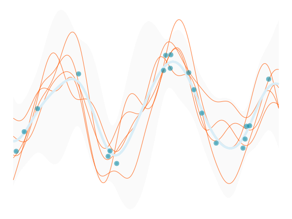
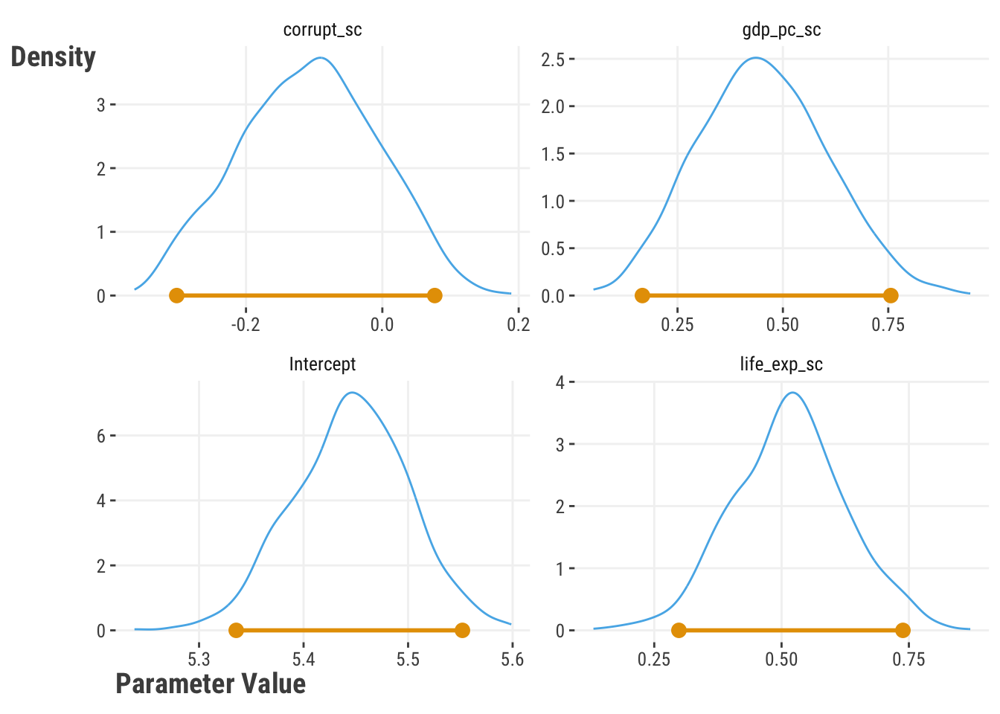
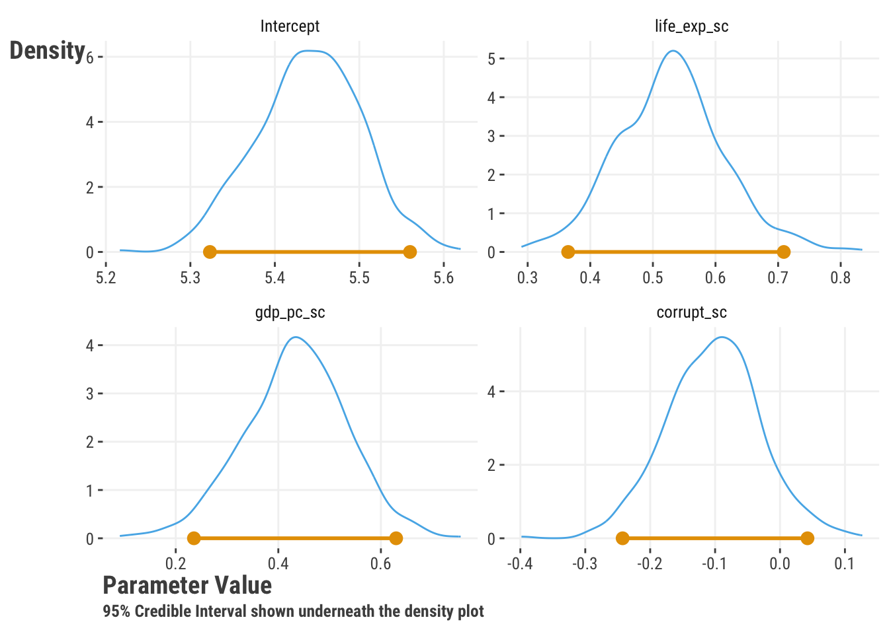
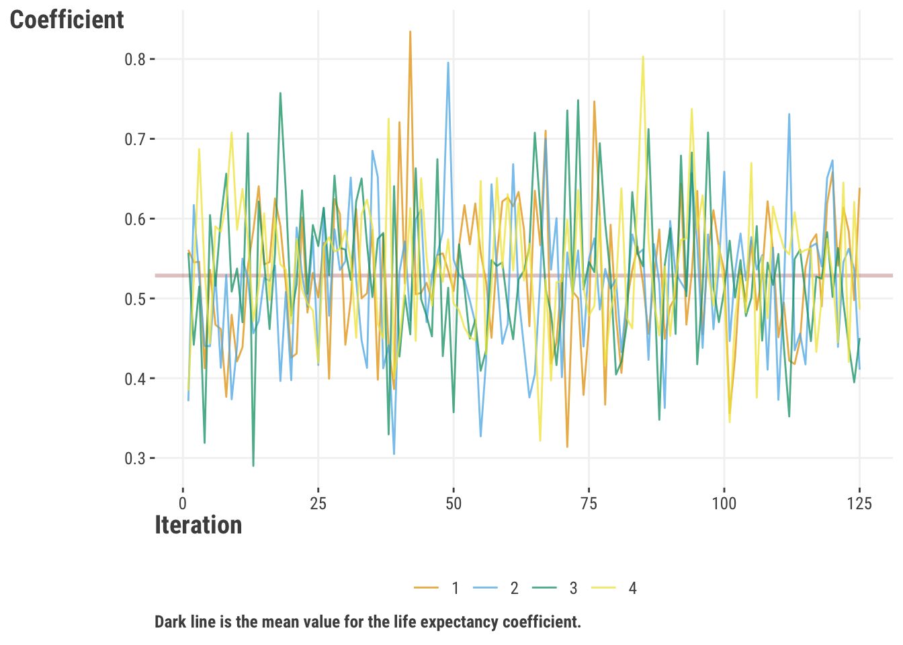
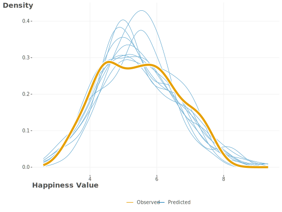

df_happiness = read_csv('https://tinyurl.com/worldhappiness2018') |>
drop_na() |>
rename(happiness = happiness_score) |>
select(
country,
happiness,
contains('_sc')
)7 Estimating Uncertainty

Our focus thus far has been on estimating the best parameters for a model. But we also want to know how certain we are about those estimates. There are different ways to estimate uncertainty, and understanding the uncertainty in our results helps us make better decisions from our model. We’ll briefly cover a few approaches here, but realize we are but merely scratching the surface on these approaches. There are whole books, and even philosophies, dedicated to the topic of uncertainty estimation.
7.1 Key Ideas
- There are multiple ways to estimate uncertainty in parameters or prediction.
- Many statistical models provide formulaic interval estimates for parameters and predictions, couched in a frequentist framework.
- Monte Carlo methods use a simulation approach to estimate uncertainty.
- Bootstrap methods use resampling to estimate uncertainty.
- Bayesian methods provide a different way to estimate uncertainty and an alternative philosophical spirit.
- Conformal prediction provides a way to estimate uncertainty in predictions where other methods falter.
7.1.1 Why this matters
Understanding uncertainty is crucial for making decisions based on model results. It’s difficult to make informed decisions if we don’t know how certain we are about our estimates. This is especially important in high-stakes decisions, where the consequences of being wrong are severe. For example, in medical diagnosis, we want to be as certain as possible about the diagnosis before starting treatment. In finance, we want to be as certain as possible about the risk of an investment before making it. In all these cases, understanding uncertainty is key to making the best decision.
7.1.2 Helpful context
If you are comfortable with standard linear models you should be okay here. This chapter does get a bit more technical and is more DIY than others, but the examples should prove straightforward.
7.2 Data Setup
Data setup follows the estimation chapter for consistency (Section 6.2).
import pandas as pd
df_happiness = (
pd.read_csv('https://tinyurl.com/worldhappiness2018')
.dropna()
.rename(columns = {'happiness_score': 'happiness'})
.filter(regex = '_sc|country|happ')
)Nothing beyond base R is needed. For Python examples, the following are required.
import numpy as np
import statsmodels.api as sm
import statsmodels.formula.api as smf
from sklearn.linear_model import LinearRegression
from sklearn.model_selection import train_test_split
from scipy import stats7.3 Standard Frequentist
We talked a bit about the frequentist approach in our discussion of confidence intervals (Section 3.4.1). There we described the process using the interval to capture the ‘true’ parameter value a certain percentage of the time. The key assumption is that the true parameter is fixed, and the interval is a random variable that will contain the true value with some percentage frequency. With this approach, if you were to repeat the experiment, i.e., data collection and analysis, many times, each interval would be slightly different. Although they would be different, any one of the intervals is as good or valid as the others. You also know that a certain percentage of them will contain the true value, and a (usually small) percentage will not. You will never know if a specific interval does actually capture the true value, because we don’t know the true value in practice.
This is a common approach in traditional statistical analysis, and so it’s used in many modeling contexts. If no particular estimation approach is specified, the default is usually a frequentist one. The approach not only provides confidence intervals for the parameters, but we can also get them for predictions, which is typically also a goal.
Here is an example using our previous model to get interval estimates for predictions. Here we get so-called ‘confidence’ or ‘prediction’ intervals. Both are confidence intervals in the frequentist sense, just for different purposes. The confidence interval is for the average prediction, while the prediction interval is for a future observation. The prediction interval is wider because it includes the uncertainty in the model parameters as well as the uncertainty in the prediction itself.
model = lm(
happiness ~ life_exp_sc + corrupt_sc + gdp_pc_sc,
data = df_happiness
)
confint(model)
predict(model, interval = 'confidence') # for an average prediction
predict(model, interval = 'prediction') # for a future observation (wider)model = smf.ols(
'happiness ~ life_exp_sc + corrupt_sc + gdp_pc_sc',
data = df_happiness
).fit()
model.conf_int()
# both 'confidence' and 'prediction' intervals
model.get_prediction().summary_frame()The confidence interval is narrower because it only includes the uncertainty in the model parameters, while the prediction interval is wider because it includes the uncertainty in the model parameters and the prediction itself. The linear regression model provides these intervals by default, but we can also calculate them by hand. Here we show how to calculate the intervals for the predictions by hand by essentially performing the formula for the interval estimates. A sample of results are shown in the following table.
X = model.matrix(model)
# get the prediction
y_hat = X %*% coef(model)
# get the standard error
se = sqrt(diag(X %*% vcov(model) %*% t(X)))
# critical value for 95% confidence
cv = qt(0.975, df = model$df.residual)
# get the confidence interval
tibble(
prediction = y_hat[,1],
lower = y_hat[,1] - cv * se,
upper = y_hat[,1] + cv * se
) |>
head()
predict(model, interval = 'confidence') |> head()
# get the prediction interval
se_pred = sqrt(se^2 + summary(model)$sigma^2)
data.frame(
prediction = y_hat[,1],
lower = y_hat[,1] - cv * se_pred,
upper = y_hat[,1] + cv * se_pred
) |>
head()
predict(model, interval = 'prediction') |> head()X = model.model.exog
# get the prediction
y_hat = X @ model.params
# get the standard error
se = np.sqrt(np.diag(X @ model.cov_params() @ X.T))
# critical value for 95% confidence
cv = stats.t.ppf(0.975, model.df_resid)
# get the confidence interval
pd.DataFrame({
'prediction': y_hat,
'lower': y_hat - cv * se,
'upper': y_hat + cv * se
}).head()
model.get_prediction().summary_frame().head()
# get the prediction interval
se_pred = np.sqrt(se**2 + model.mse_resid)
pd.DataFrame({
'prediction': y_hat,
'lower': y_hat - cv * se_pred,
'upper': y_hat + cv * se_pred
}).head()
model.get_prediction().summary_frame().head()| prediction | our_lwr | our_upr | lm_lwr | lm_upr |
|---|---|---|---|---|
| Confidence | ||||
| 3.99 | 3.72 | 4.25 | 3.72 | 4.25 |
| 5.50 | 5.29 | 5.70 | 5.29 | 5.70 |
| 5.68 | 5.50 | 5.85 | 5.50 | 5.85 |
| Prediction | ||||
| 3.99 | 2.74 | 5.24 | 2.74 | 5.24 |
| 5.50 | 4.26 | 6.74 | 4.26 | 6.74 |
| 5.68 | 4.44 | 6.91 | 4.44 | 6.91 |
These interval estimates for parameters and predictions are actually not easy to get right for more complicated models beyond generalized linear models. Given this, one should be cautious when moving beyond standard linear models. The next two approaches we’ll discuss are often used within the frequentist framework to estimate uncertainty in more complex models.
7.4 Monte Carlo
Monte Carlo methods derive their name from the famous casino in Monaco1. The idea is to use random sampling to estimate a value. With statistical models, we can use Monte Carlo methods to estimate uncertainty in our model parameters and predictions. The general idea is as follows:
- Estimate the model parameters using the data and their range of possible values (e.g., based on a probability distribution).
- Simulate new data from the model using the estimated parameters and assumed probability distributions for those parameters.
- Estimate the metrics of interest using the simulated data.
- Repeat many times.
The result is a distribution of the value of interest, be it a parameter, a prediction, or maybe an evaluation metric like RMSE. This distribution can then be used to provide a sense of uncertainty in the value, such as an interval estimate. We can use Monte Carlo methods to estimate the uncertainty in predictions for our happiness model as follows.
# we'll use the model from the previous section
model = lm(
happiness ~ life_exp_sc + corrupt_sc + gdp_pc_sc,
data = df_happiness
)
# number of simulations
mc_predictions = function(
model,
nsim = 2500,
seed = 42
) {
set.seed(seed)
params_est = coef(model)
params = mvtnorm::rmvnorm(
n = nsim,
mean = params_est,
sigma = vcov(model)
)
sigma = summary(model)$sigma
X = model.matrix(model)
y_hat = X %*% t(params) + rnorm(n = nrow(X) * nsim, sd = sigma)
pred_int = apply(y_hat, 1, quantile, probs = c(.025, .975))
return(pred_int)
}
our_mc = mc_predictions(model)# we'll use the model from the previous section
model = smf.ols(
'happiness ~ life_exp_sc + corrupt_sc + gdp_pc_sc',
data = df_happiness
).fit()
def mc_predictions(model, nsim=2500, seed=42):
np.random.seed(seed)
params_est = model.params
params = np.random.multivariate_normal(
mean = params_est,
cov = model.cov_params(),
size = nsim
)
sigma = model.mse_resid**.5
X = model.model.exog
y_hat = X @ params.T + \
np.random.normal(scale = sigma, size = (X.shape[0], nsim))
pred_int = np.quantile(y_hat, q = [.025, .975], axis = 1)
return pred_int
our_mc = mc_predictions(model)Here are the results of the Monte Carlo simulation for the prediction intervals. They are pretty close to what we’d already have available from the model package used for linear regression. However, we can use this for other models where uncertainty estimates are not readily available, providing a more general tool.
| observed_value | prediction | lower | upper | lower_lm | upper_lm |
|---|---|---|---|---|---|
| 3.63 | 3.99 | 2.78 | 5.19 | 2.74 | 5.24 |
| 4.59 | 5.50 | 4.32 | 6.73 | 4.26 | 6.74 |
| 6.39 | 5.68 | 4.43 | 6.84 | 4.44 | 6.91 |
| 4.32 | 5.41 | 4.21 | 6.67 | 4.17 | 6.65 |
| 7.27 | 6.97 | 5.71 | 8.19 | 5.72 | 8.21 |
| 7.14 | 6.88 | 5.63 | 8.13 | 5.64 | 8.12 |
| Results based on the R simulation | |||||
Monte Carlo simulation is a very popular approach in modeling, and a variant of it, markov chain monte carlo (MCMC), is the basis for Bayesian estimation, which we’ll also talk about in more detail later.
7.5 Bootstrap
An extremely common method for estimating uncertainty is the bootstrap. The bootstrap is a method where we create new datasets by randomly sampling the original data with replacement. This means that each new dataset is the same size as the original, but some observations may be selected multiple times while others may not be selected at all. We then estimate our model with each data set, and each time, we can collect parameter estimates, predictions, or any other calculations we are interested in. Ultimately, we end up with a distribution of all the things we calculated. The nice thing about this is that we don’t need to know the specific distribution (e.g., normal, or t-distribution) of the values we want to get uncertainty estimates for, we can just use the data we have to produce that distribution. And this is a key distinction from the Monte Carlo method just discussed.
The results of bootstrapping give us a range of possible values, which is useful for inference2, as we can use the distribution to calculate interval estimates. The average parameter estimate is typically the same as whatever the underlying model used would produce, so not really useful for that in the context of simpler linear models. Even so, we can calculate derivatives of the parameters, like say a ratio or sum, or a model metric like R2, or a prediction. Some of these normally would not be estimated as part of the model, or maybe the model tool does not provide anything beyond the value itself. Yet the bootstrap provides a way to get at a measure of uncertainty for the values of interest, with fewer assumptions about how that distribution should take shape.
The approach is very flexible, and it can potentially be used with any model whether in a statistical or machine learning context. Let’s see this in action with the happiness data. We’ll create a bootstrap function, then use it to estimate the uncertainty in the coefficients for the model.
bootstrap = function(X, y, nboot = 100, seed = 123) {
N = nrow(X)
p = ncol(X) + 1 # add one for intercept
# initialize
beta = matrix(NA, p*nboot, nrow = nboot, ncol = p)
colnames(beta) = c('Intercept', colnames(X))
mse = rep(NA, nboot)
# set seed
set.seed(seed)
for (i in 1:nboot) {
# sample with replacement
idx = sample(1:N, N, replace = TRUE)
Xi = X[idx,]
yi = y[idx]
# estimate model
mod = lm(yi ~., data = Xi)
# save results
beta[i, ] = coef(mod)
mse[i] = sum((mod$fitted - yi)^2) / N
}
# given mean estimates, calculate MSE
y_hat = cbind(1, as.matrix(X)) %*% colMeans(beta)
final_mse = sum((y - y_hat)^2) / N
output = list(
par = as_tibble(beta),
MSE = mse,
final_mse = final_mse
)
return(output)
}
X = df_happiness |>
select(life_exp_sc:gdp_pc_sc)
y = df_happiness$happiness
our_boot = bootstrap(
X = X,
y = y,
nboot = 1000
)def bootstrap(X, y, nboot=100, seed=123):
# add a column of 1s for the intercept
X = np.c_[np.ones(X.shape[0]), X]
N = X.shape[0]
# initialize
beta = np.empty((nboot, X.shape[1]))
# beta = pd.DataFrame(beta, columns=['Intercept'] + list(cn))
mse = np.empty(nboot)
# set seed
np.random.seed(seed)
for i in range(nboot):
# sample with replacement
idx = np.random.randint(0, N, N)
Xi = X[idx, :]
yi = y[idx]
# estimate model
model = LinearRegression(fit_intercept=False) # from sklearn
mod = model.fit(Xi, yi)
# save results
beta[i, :] = mod.coef_
mse[i] = np.sum((mod.predict(Xi) - yi)**2) / N
# given mean estimates, calculate MSE
y_hat = X @ beta.mean(axis=0)
final_mse = np.sum((y - y_hat)**2) / N
output = {
'par': beta,
'mse': mse,
'final_mse': final_mse
}
return output
our_boot = bootstrap(
X = df_happiness[['life_exp_sc', 'corrupt_sc', 'gdp_pc_sc']],
y = df_happiness['happiness'],
nboot = 1000
)Here are the results of the interval estimates for the coefficients. Each parameter has the mean estimate, the lower and upper bounds of the 95% confidence interval, and the width of the interval. The bootstrap intervals are a bit wider than the OLS intervals, but for this model these should converge as the number of observations increases.
| Parameter | mean | Lower BS | Upper BS | Lower OLS | Upper OLS | Diff Width1 |
|---|---|---|---|---|---|---|
| Intercept | 5.45 | 5.34 | 5.55 | 5.33 | 5.56 | −0.01 |
| life_exp_sc | 0.52 | 0.30 | 0.74 | 0.35 | 0.70 | 0.09 |
| corrupt_sc | −0.11 | −0.30 | 0.08 | −0.25 | 0.04 | 0.09 |
| gdp_pc_sc | 0.45 | 0.17 | 0.76 | 0.24 | 0.64 | 0.19 |
| 1 Width of bootstrap estimate minus width of OLS estimate | ||||||
Let’s look more closely at the distributions for each coefficient. Standard statistical estimates assume a specific distribution like the normal. But the bootstrap method provides more flexibility, even though it often leans towards the assumed distribution. We can see these distributions aren’t perfectly symmetrical like a normal distribution, but they suit our needs in that we can extract the lower and upper quantiles to create an interval estimate.

As mentioned, the bootstrap is often used to provide uncertainty for unmodeled parameters, predictions, and other metrics. However, because we repeatedly run the model or some aspect of it over and over, it is computationally inefficient, and might not be suitable with large data sizes. It also may not estimate the appropriate uncertainty for some types of statistics (e.g., extreme values) or in some data contexts (e.g., correlated observations) without extra considerations. Variants exist to help deal with some of these issues, and despite limitations, the bootstrap method is a useful tool and can be used together with other methods to understand uncertainty in a model.
7.6 Bayesian
The Bayesian approach to modeling is many things - a philosophical viewpoint, an entirely different way to think about probability, a different way to measure uncertainty, and on a practical level, just another way to get model parameter estimates. It can be as frustrating as it is fun to use, and one of the really nice things about using Bayesian estimation is that it can handle model complexities that other approaches don’t do well or at all.
The basis of Bayesian estimation is the likelihood, the same as with maximum likelihood, and everything we did there applies here. So you need a good grasp of maximum likelihood to understand the Bayesian approach. However, the Bayesian approach is different because it also lets us use our knowledge about the parameters through prior distributions. For example, we may think that the coefficients for a linear model come from a normal distribution centered on zero with some variance. That would serve as our prior distribution for those parameters.
The combination of a prior distribution with the likelihood results in the posterior distribution, which is a distribution of possible parameter values. It falls somewhere between the prior and the likelihood. With more data, it tends toward the likelihood result, and with less data, it tends toward what the prior would have suggested. The posterior distribution is what we ultimately use to make inferences about the parameters, and it can be used to estimate uncertainty in the same way as the bootstrap.

Example
Let’s do a simple example to show how this comes about. We’ll use a binomial model where we have penalty kicks taken for a soccer player, and we want to estimate the probability of the player making a goal, which we’ll call \(\theta\).
For our prior distribution, we’ll use a beta distribution that has a mean of 0.5, suggesting that we think this person would have about a 50% chance of converting the kick on average. However, we will keep this prior fairly loose, with a range that spans most of the (0, 1) interval. For the likelihood, we’ll use a binomial distribution. We also use this in our GLM chapter (Equation 8.3), which, as we noted earlier in this chapter, is akin to using the log loss (Section 6.9.2). We’ll then calculate the posterior distribution for the probability of making a shot, given our prior and the evidence at hand, i.e., the data.
Let’s start with some data, and just like our other estimation approaches, we’ll have some guesses for \(\theta\) which represents the probability of making a goal. We’ll use the prior distribution to represent our beliefs about those parameter values, assigning more weight to values around 0.5. We’ll then calculate the likelihood of the data given the parameter, which will put more weight on values closer to the observed chance of scoring a goal. Finally, we calculate the posterior distribution.
pk = c(
'goal','goal','goal','miss','miss',
'goal','goal','miss','goal','goal'
)
# convert to numeric, arbitrarily picking goal=1, miss=0
N = length(pk) # sample size
n_goal = sum(pk == 'goal') # number of pk made
n_miss = sum(pk == 'miss') # number of those miss
# grid of potential theta values
theta = seq(
from = 1 / (N + 1),
to = N / (N + 1),
length = 10
)
### prior distribution
# beta prior with mean = .5, but fairly diffuse
# examine the prior
# theta = rbeta(1000, 5, 5)
# hist(theta, main = 'Prior Distribution', xlab = 'Theta', col = 'lightblue')
p_theta = dbeta(theta, 5, 5)
# Normalize so that values sum to 1
p_theta = p_theta / sum(p_theta)
# likelihood (binomial)
p_data_given_theta = choose(N, n_goal) * theta^n_goal * (1 - theta)^n_miss
# posterior (combination of prior and likelihood)
# p_data is the marginal probability of the data used for normalization
p_data = sum(p_data_given_theta * p_theta)
p_theta_given_data = p_data_given_theta*p_theta / p_data # Bayes theorem
# final estimate
theta_est = sum(theta * p_theta_given_data)
theta_est[1] 0.6from scipy.stats import beta
pk = np.array([
'goal','goal','goal','miss','miss',
'goal','goal','miss','goal','goal'
])
# convert to numeric, arbitrarily picking goal=1, miss=0
N = len(pk) # sample size
n_goal = np.sum(pk == 'goal') # number of pk made
n_miss = np.sum(pk == 'miss') # number of those miss
# grid of potential theta values
theta = np.linspace(1 / (N + 1), N / (N + 1), 10)
### prior distribution
# beta prior with mean = .5, but fairly diffuse
# examine the prior
# theta = beta.rvs(5, 5, size = 1000)
# plt.hist(theta, bins = 20, color = 'lightblue')
p_theta = beta.pdf(theta, 5, 5)
# Normalize so that values sum to 1
p_theta = p_theta / np.sum(p_theta)
# likelihood (binomial)
p_data_given_theta = np.math.comb(N, n_goal) * theta**n_goal * \
(1 - theta)**n_miss
# posterior (combination of prior and likelihood)
# p_data is the marginal probability of the data used for normalization
p_data = np.sum(p_data_given_theta * p_theta)
p_theta_given_data = p_data_given_theta * p_theta / p_data # Bayes theorem
# final estimate
theta_est = np.sum(theta * p_theta_given_data)
theta_est0.599999996503221Here is the table that puts all this together. Our prior distribution is centered around a \(\theta\) of 0.5 because we made it that way. The likelihood is centered closer to 0.7 because that’s the observed chance of scoring a goal. The posterior distribution is a combination of the two. It gives no weight to smaller values, or to the max value. Our final estimate is 0.6, which falls between the prior and likelihood values that have the most weight. With more evidence in the form of data, our estimate will shift more and more towards what the likelihood would suggest. This is a simple example, but it shows how the Bayesian approach works, and this conceptually holds for more complex parameter estimation as well.
| theta | prior | like | post |
|---|---|---|---|
| 0.09 | 0.00 | 0.00 | 0.00 |
| 0.18 | 0.03 | 0.00 | 0.00 |
| 0.27 | 0.09 | 0.01 | 0.00 |
| 0.36 | 0.16 | 0.03 | 0.03 |
| 0.45 | 0.22 | 0.08 | 0.14 |
| 0.55 | 0.22 | 0.16 | 0.28 |
| 0.64 | 0.16 | 0.24 | 0.32 |
| 0.73 | 0.09 | 0.26 | 0.19 |
| 0.82 | 0.03 | 0.18 | 0.04 |
| 0.91 | 0.00 | 0.05 | 0.00 |
Application
Just like with the bootstrap which also provided distributions for the parameters, we can use the Bayesian approach to understand how certain we are about our estimates. We can look at any range of values in the posterior distribution to get what is often referred to as a credible interval, which is the Bayesian equivalent of a confidence interval3. Here is an example of the posterior distribution for the parameters of our happiness model, along with 95% intervals4.

With Bayesian estimation we also provide starting values for the algorithm, which is a form of Monte Carlo estimation5, to get things going. We also typically specify a number of iterations, or times the model will run, as the stopping rule. Each iteration gives us a new guess for each parameter, which amounts to a random draw from the posterior distribution. With more iterations the model takes longer to run, but the length often reflects the complexity of the model.
We also specify multiple chains, which do the same estimation procedure, but due to the random nature of the Bayesian approach and starting point, take different estimation paths6. We can then compare the chains to see if they are converging to the same result, which is a check on the model. If they are not converging, we may need to run the model longer, or it may indicate a problem with how we set up the model.
Here’s an example of the four chains for our happiness model for the life expectancy coefficient. The chains bounce around a bit from one iteration to the next, but on average, they’re giving very similar results, so we know the model is working well. Nowadays, we have default statistics in the output that also provide this information, which makes it easier to quickly check convergence for many parameters.

When we are interested in making predictions, we can use the results to generate a distribution of possible predictions for each observation, which can be very useful when we want to quantify uncertainty for complex models. This is referred to as posterior predictive distribution, which is explored in a non-bayesian context in Section 4.4. Here is a plot of several draws of predicted values against the true happiness scores.

With the Bayesian approach, every metric we calculate has a range of possible values, not just one. For example, if you have a classification model and want to know the accuracy, AUROC, or true positive rate of the model. Instead of a single number, you would now have access to a whole distribution of values for that metric. How? For each possible set of model parameters from the posterior distribution, we apply those values and model to data to make a prediction. We can then assign it to a class, and compare it to the actual class. This gives us a range of possible predictions and classes. We can then calculate metrics like accuracy or true positive rate for each possible prediction set. As an example, we did this for our happiness model with a numeric target to obtain the interval estimate for R-squared. Pretty neat!
| Bayes R2 | Lower | Upper |
|---|---|---|
| 0.71 | 0.65 | 0.75 |
| 95% Credible interval for R-squared | ||
7.6.0.1 Additional Thoughts
It turns out that any standard (frequentist) statistical model can be seen as a Bayesian one from a certain point of view7. Here are a couple.
- GLM and related models estimated via maximum likelihood: Bayesian estimation with a flat/uniform prior on the parameters.
- Ridge Regression: Bayesian estimation with a normal prior on the coefficients, penalty parameter is related to the variance of the prior.
- Lasso Regression: Bayesian estimation with a Laplace prior on the coefficients, penalty parameter is related to the variance of the prior.
- Mixed Models: random effects are, as the name suggests, random, and so are estimated as a distribution of possible values, which is conceptually in line with the Bayesian approach.
So, in many modeling contexts, you’re actually doing a restrictive form of Bayesian estimation already.
The Bayesian approach is very flexible, and can be used for many different types of models, and can be used to get at uncertainty in a model in ways that other approaches can’t. It’s not always the best approach, even when appropriate due to the computational burden and just diagnostic complexity, but it’s a good one to have in your toolbox8. Hopefully we’ve helped to demystify the Bayesian approach a bit here, and you feel more comfortable trying it out.
7.7 Conformal Methods
Conformal approaches bring us back to the frequentist world, and specifically regard prediction uncertainty. One of the primary strengths of the approach is that it is model agnostic and theoretically can work for any model, from linear regression to deep learning. Like the bootstrap and Bayesian methods, conformal prediction makes us think in terms of distributions of possible values, but it focuses on residuals or errors in prediction.
It is based on the idea that we can estimate the uncertainty in our predictions by looking at the distribution of the predictions from the model, or more specifically, the prediction error. Using the observed prediction error on a calibration set that was not used to train the model, we can order those errors and find the quantile corresponding to the desired uncertainty coverage/error rate9. When predicting on new data, we assume the predictions and corresponding errors come from a similar distribution as what we’ve seen already in our training/calibration process. We do this with no particular assumption about that distribution. We then use the estimated quantile to create upper and lower bounds for a prediction for a new observation.
While the implementation for various settings can get quite complicated, the conceptual approach is mostly straightforward. As an example, we can demonstrate the split-conformal procedure with the following steps.
- Split Data: Split the dataset into training and calibration sets.
- Train Model: Train the model using the training set.
- Calculate Scores: Calculate conformity scores on the calibration set. These are the absolute residuals between the predicted and actual values on the calibration set.
- Quantile Calculation: Determine the quantile value of the conformity scores for the desired confidence level.
- Generate Intervals: Generate prediction intervals for new data points. For new data points, use the trained model to make predictions. Adjust these predictions by adding and subtracting the quantile value obtained from the conformity scores to generate the lower and upper bounds of the prediction intervals.
Let’s now demonstrate the split-conformal method with our happiness model. We’ll start by defining the split-conformal function. The function takes the training data, the target variable, and new data for which we want to make predictions. It also takes an \(\alpha\) value, which is the error rate we want to control, and a calibration split, which is the proportion of the data we use for calibration. And finally, we designate new data for which we want to make predictions.
split_conformal = function(
X,
y,
new_data,
alpha = .05,
calibration_split = .5
) {
# Splitting the data into training and calibration sets
idx = sample(1:nrow(X), size = floor(nrow(X) / 2))
train_data = X |> slice(idx)
cal_data = X |> slice(-idx)
train_y = y[idx]
cal_y = y[-idx]
N = nrow(train_data)
# Train the base model
model = lm(train_y ~ ., data = train_data)
# Calculate residuals on calibration set
cal_preds = predict(model, newdata = cal_data)
residuals = abs(cal_y - cal_preds)
# Sort residuals and find the quantile corresponding to (1-alpha)
residuals = sort(residuals)
quantile = quantile(residuals, (1 - alpha) * (N / (N + 1)))
# Make predictions on new data and calculate prediction intervals
preds = predict(model, newdata = new_data)
lower_bounds = preds - quantile
upper_bounds = preds + quantile
# Return predictions and prediction intervals
return(
list(
cp_error = quantile,
preds = preds,
lower_bounds = lower_bounds,
upper_bounds = upper_bounds
)
)
}def split_conformal(X, y, new_data, alpha = .05, calibration_split = .5):
# Splitting the data into training and calibration sets
X_train, X_cal, y_train, y_cal = train_test_split(
X,
y,
test_size = calibration_split,
random_state = 123
)
N = X_train.shape[0]
# Train the base model
model = LinearRegression().fit(X_train, y_train)
# Calculate residuals on calibration set
cal_preds = model.predict(X_cal)
residuals = np.abs(y_cal - cal_preds)
# Sort residuals and find the quantile corresponding to (1-alpha)
residuals = np.sort(residuals)
# The correction here is useful for small sample sizes
quantile = np.quantile(residuals, (1 - alpha) * (N / (N + 1)))
# Make predictions on new data and calculate prediction intervals
preds = model.predict(new_data)
lower_bounds = preds - quantile
upper_bounds = preds + quantile
# Return predictions and prediction intervals
return {
'cp_error': quantile,
'preds': preds,
'lower_bounds': lower_bounds,
'upper_bounds': upper_bounds
}With our functions in place, we can now use them to calculate the prediction intervals for the happiness model. The cp_error value gives us the quantile value that we use to generate the prediction intervals. Raw result is not shown, but the subsequent table shows the first few predictions and their corresponding prediction intervals.
# split data
set.seed(123)
idx_train = sample(nrow(df_happiness), nrow(df_happiness) * .8)
idx_test = setdiff(1:nrow(df_happiness), idx_train)
df_train = df_happiness |>
slice(idx_train) |>
select(happiness, life_exp_sc, gdp_pc_sc, corrupt_sc)
y_train = df_happiness$happiness[idx_train]
df_test = df_happiness |>
slice(idx_test) |>
select(life_exp_sc, gdp_pc_sc, corrupt_sc)
y_test = df_happiness$happiness[idx_test]
# apply the function
cp_error = split_conformal(
df_train |> select(-happiness),
y_train,
df_test,
alpha = .1
)
# cp_error[['cp_error']]
tibble(
prediction = cp_error[['preds']],
lower_bounds = cp_error[['lower_bounds']],
upper_bounds = cp_error[['upper_bounds']]
) |>
head()# split data
X = df_happiness[['life_exp_sc', 'corrupt_sc', 'gdp_pc_sc']]
y = df_happiness['happiness']
X_train, X_test, y_train, y_test = train_test_split(
df_happiness[['life_exp_sc', 'corrupt_sc', 'gdp_pc_sc']],
df_happiness['happiness'],
test_size = 0.5,
random_state = 123
)
our_cp_error = split_conformal(
X_train,
y_train,
X_test,
alpha = .1
)
# print(our_cp_error['cp_error'])
pd.DataFrame({
'prediction': our_cp_error['preds'],
'lower_bounds': our_cp_error['lower_bounds'],
'upper_bounds': our_cp_error['upper_bounds']
}).head()| prediction | lower_bounds | upper_bounds |
|---|---|---|
| 4.04 | 2.94 | 5.13 |
| 5.27 | 4.18 | 6.37 |
| 6.84 | 5.74 | 7.94 |
| 4.34 | 3.24 | 5.44 |
| 4.15 | 3.05 | 5.24 |
| 7.26 | 6.16 | 8.36 |
| Result based on the R code | ||
As a method of uncertainty estimation, conformal prediction is not without its challenges. It is computationally intensive for large datasets or complex models. There are multiple variants of conformal prediction, most of which attempt to alleviate a deficiency of simpler approaches. But they generally further increase the computational burden.
Conformal prediction still relies on the assumptions about the data and the underlying model, and violations of these assumptions can lead to invalid prediction intervals. Furthermore, conformal prediction methods assume that the training and test data come from the same distribution, which may not always be the case in real-world applications due to distribution shifts or domain changes. In addition, validation sets must be viable splits of the data, which default splitting methods may not always provide. In general, conformal prediction provides an alternative to other frequentist or Bayesian approaches that, under the right circumstances, may produce a better estimate of uncertainty, but does not come for free.
7.8 Wrapping Up
Understanding uncertainty is key to understanding the quality of your model. It’s not just about the point estimate, or getting a prediction, but also about how confident you are in value. We’ve covered several avenues from the basics of estimation to the more complex Bayesian and conformal methods. If the model provides a standard statistical solution, take it. Otherwise, the bootstrap is easy to understand and implement. Bayesian methods are more complex, but can provide more information about the uncertainty in your model. Conformal prediction is a good choice when you want to make predictions without making strong assumptions about the underlying model, and may be the best option for many contexts.
We hope you now have a better understanding of how to estimate uncertainty in your models, and how to use that information to make better decisions.
7.8.1 The common thread
No model is without uncertainty, so any of these techniques may be applicable to your work. The choice of method depends largely on how you want to tackle the issue.
7.8.2 Choose your own adventure
This chapter colors all others that focus on specific modeling techniques. You can think about how you might implement uncertainty estimation for any of them.
7.8.3 Additional resources
Frequentist Approaches:
- Most statistical texts cover uncertainty estimation from the frequentist perspective. Pick one you like.
- Error Statistics Deborah Mayo’s blog and comments on other blogs have always provided a strong philosophical defense of frequentist statistics.
Monte Carlo:
- Monte Carlo Methods John Guttag’s MIT Course lecture on YouTube.
Bootstrap:
Classical treatments:
A more fun demo:
- Bootstrapping Main Ideas StatQuest with Josh Starmer (2021)
Bayesian:
- Bayesian Data Analysis Gelman et al. (2013). For many, this is the Bayesian bible.
- Statistical Rethinking McElreath (2020). A fantastic modeling book, Bayesian or otherwise.
- Choosing priors
Conformal Prediction:
General:
- A Gentle Introduction to Conformal Prediction and Distribution-Free Uncertainty Quantification (Angelopoulos and Bates (2022)); Example Python Notebooks
R demos:
Python demos:
- Introduction To Conformal Prediction With Python (Molnar (2024))
- Mapie Docs
Other: - Sources of Uncertainty in Machine Learning - A Statisticians’ View (Gruber et al. (2023))
7.9 Guided Exploration
We find that simulation is a great way to understand models, and the monte carlo approach to uncertainty definitely puts simulation at the forefront. The next chapter focuses on generalized linear models, so if you’re not familiar with logistic regression, head there first. If you are familiar, see if you can apply the monte carlo approach to get predicted probabilities for a logistic regression model. You really only need to change two lines from our previous code.
mc_predictions = function(
model,
nsim = 2500,
seed = 42
) {
...
# we aren't dealing with a normal distribution for this
# how should we change this line?
yhat = X %*% t(params) + rnorm(n = nrow(X) * nsim, sd = sigma)
# how do we get probabilities from this?
???? = ????
# proceed as before
pred_int = apply(y_hat, 1, quantile, probs = c(.025, .975))
return(pred_int)
}def mc_predictions(model, nsim=2500, seed=42):
...
# we aren't dealing with a normal distribution for this
# how should we change this line?
yhat = X @ params + \
np.random.normal(scale = sigma, size = (X.shape[0], nsim))
# how do we get probabilities from this?
???? = ????
# proceed as before
pred_int = np.quantile(yhat, q = [.025, .975], axis = 1)
return pred_intThe name originates with Stanislav Ulam, who worked on the Manhattan Project and would actually come up with the idea from playing solitaire. He is also the one who inspired the name of the Bayesian probabilistic programming language Stan!↩︎
We’re using inference here in the standard statistical/philosophical sense, not as a synonym for prediction or generalization, which is how it is often used in machine learning. We’re not exactly sure how that terminological muddling arose in ML, but be on the lookout for it.↩︎
Many people’s default interpretation of a standard confidence interval is usually something like ‘the range we expect the parameter to reside within’. Unfortunately, that’s not quite right, though it is how you interpret the Bayesian interval. The frequentist confidence interval is a range that, if we were to repeat the experiment/data collection many times, contains the true parameter value a certain percentage of the time. For the Bayesian, the parameter is assumed to be random, and so the interval is that which we expect the parameter to fall within a certain percentage of the time. The Bayesian is probably a bit more intuitive for most, even if it’s not the more widely used.↩︎
We used the R package for brms for these results.↩︎
The most common method for the Bayesian approach is Markov Chain Monte Carlo (MCMC), which is a way to sample from the posterior distribution. There are many MCMC algorithms, many of which are a form of the now fairly old Metropolis-Hastings algorithm, which you can find a demo of at Michael’s doc.↩︎
Some deep learning implementations will use multiple random starts for similar reasons.↩︎
Cue Obi Wan Kenobi.↩︎
R has excellent tools here for modeling and post-processing, like brms and tidybayes, and Python has pymc3, numpyro, and arviz, which are also useful. Honestly R has way more going on here, with many packages devoted to Bayesian estimation of specific models even, but if you want to stick with Python it’s gotten a lot better recently.↩︎
The error rate (\(\alpha\)) is the proportion of the data that would fall outside the prediction interval, while the coverage rate/interval is 1 - \(\alpha\).↩︎